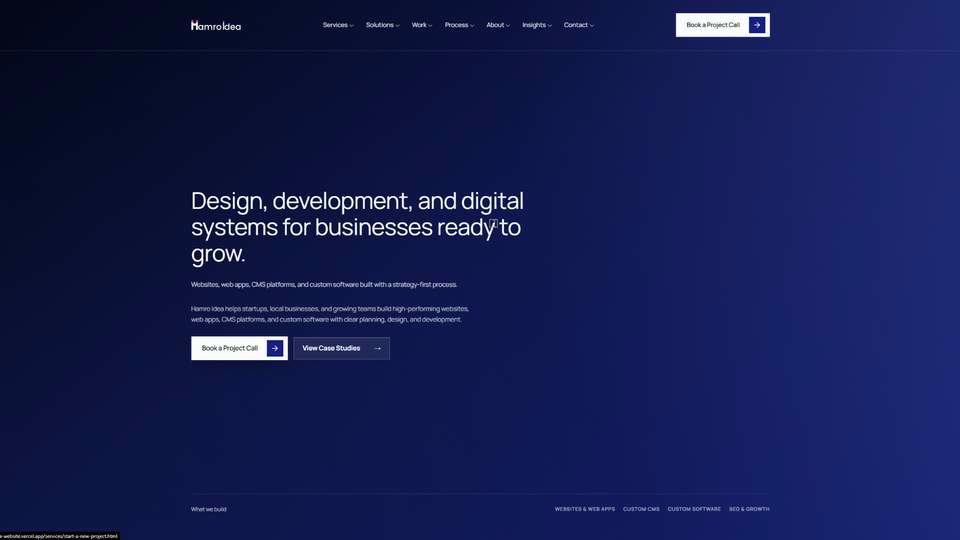

Hamro Idea
Rebranded and built a static multi-page website for Hamro Idea, a Nepal-based software and digital product studio. The work focused on clearer positioning, service clarity, SEO structure, and conversion paths.

Role
Brand + Website Designer
Design and development
Scope
Logo, positioning, static pages, SEO
Focus
Credibility, service clarity, conversion
What I worked on
- Brand repositioning and evolutionary logo redesign.
- Static multi-page website structure for a Nepal-based software studio.
- Service, solution, work, process, about, insights, and contact page direction.
- SEO-focused metadata, sitemap, robots file, and clearer service content.
- Responsive visual direction and front-end implementation.
This case study is written without fake metrics, testimonials, awards, or client claims. The focus is the actual brand and website work.